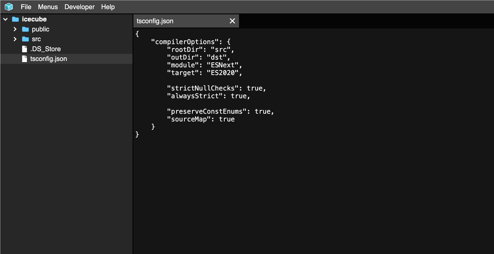

Welcome!
I am Morgan. I am an independent programmer. I have worked on a variety of front-end, back-end, and game development projects. Contact me at contact@heledron.com.
ERP System
This is a web-based ERP system that I developed for a food distribution company in Hong Kong. Initially designed as a simple order entry tool, it has since grown to include inventory management, sales history, and reporting capabilities. The system supports both desktop and mobile devices.
Since deploying the tool, salespeople have been able to submit orders without having to call the office. They have instant access to product inventory, sales history, and no longer have to cross-reference product codes with a huge paper catalogue.
Support staff no longer have to manually enter orders into their legacy system and generate routine reports by hand. They can also create professional-looking product brochures in seconds for sending to clients. Management estimates these features save support staff 3-4 hours of work per day.
Management has access to performance metrics for making more informed decisions. Reports that previously took hours to compile can now be generated in seconds.
This system has to efficiently handle large amounts of data whilst remaining functional in low-bandwidth/offline environments. I designed it to be offline-first using Service Workers and client-side caching.
The system has to present complex information and actions to non-technical users. I put a lot of care into designing an interface that is easy and intuitive to use.
Additionally, it has to integrate with an existing off-the-shelf system that has accrued significant technical debt. I reverse-engineered huge database tables with poorly named columns that were likely machine-generated by an ORM.
I continue to add new features to the system and have worked with the company on other projects.
Marketing / Landing Page
615coconutsugar.com is a marketing website I developed for a food distribution company in Hong Kong. The original website was built by a web design agency using WordPress and hosted through an expensive plan. I helped rebuild the website using SvelteKit, significantly improving responsiveness and load times. I also added multilingual support (5 languages), support for mobile devices, and cleaned up the design.
Outlook Add-in
This is an Outlook add-in I developed for a compliance company in Hong Kong. It includes a template system with rich-text, image, and automatic time zone conversion features.
I was contracted to develop this add-in as a replacement for a legacy system that was built with VBA, which is being deprecated by Microsoft.
For this project, I had to find clever workarounds as the new Outlook add-in API is much more limited than the old VBA API. Additionally, I had to design an interface that was easy to use for non-technical users.
I continue to maintain and add new features to the system.
Heledron.com
Heledron.com is my personal website. It hosts a variety of art projects and tools to solve niche problems I encounter.
A few notable examples include:
Reuleaux Polygon Generator

A tool for generating Reuleaux polygons. This tool was featured in a successful Kickstarter campaign. This was the first of its kind to be made publicly available on the web (that I could find), and is currently still the only one that supports an "extension" parameter.
Sorting Algorithm Visualizer

A tool for visualizing 11+ sorting algorithms. Although other tools for this already exist, I wanted to build one that would work on the web and visualize auxiliary memory.
6D Mandelbrot Explorer

A tool for exploring the Mandelbrot in 6 dimensions, inspired by this YouTube video by 2swap.
Ascii 3D

A 3D rendering pipeline that outputs ASCII characters instead of pixels. This was featured on BxJS Weekly, a popular JavaScript podcast. This project taught me linear algebra and how 3D rendering pipelines work.
EMCL Compiler
A compiler that converts my own programming language (EMCL), into Minecraft function files, a verbose, low-level language with some similarities to assembly. It has accrued a small user base and has been featured on some lists. The compiler contains a lexical-analyser, syntax-analyser, semantic-analyser, optimizer, and code-generator, all built from scratch without any external libraries or generators. In developing this tool, I also learnt to create VSCode language extensions for simple syntax highlighting and code snippets.
Here are some projects I built using this tool:

Game Programming
Minecraft Modding
I also worked on a few Minecraft programming projects with companion YouTube tutorials using Java, Kotlin, GLSL, and Minecraft function files.


I've also worked with the design studio Varuna. I was the sole programmer for The Alfie Templeman Minecraft Festival, and Nijisanji Prism Cup 2023.
Suspended projects
UI Framework
I attempted to develop a front-end UI framework. I have since abandoned this project, but gained intimate knowledge of all the different rendering paradigms used by modern UI frameworks. Since then, I contributed resize observer bindings to the Svelte project, as I was frustrated by the legacy iframe-workaround.
Game Engine
I developed a 2D game engine in JavaScript and made a few simple games with it. I have since abandoned this project due to my evolving standards for code quality and it would be easier to start from scratch. Since then, I have experimented with similar projects by building 3D rendering pipelines, and working with OpenGL and WebGL.
ICECube (Code Editor)
ICECube is a code editor I developed a long time ago. It had a web version using the then-new File System Access API, and an Electron.js version which I never released publicly. It included a code-editor with syntax highlighting, a JSON editor capable of editing complex nested JSON objects defined by a schema, and multiple graphical editors all built from scratch. It was abandoned due to lack of users, and my improved standards for code quality and UX. As my first major application with a large codebase, it allowed me to experiment with many new technologies and programming patterns.